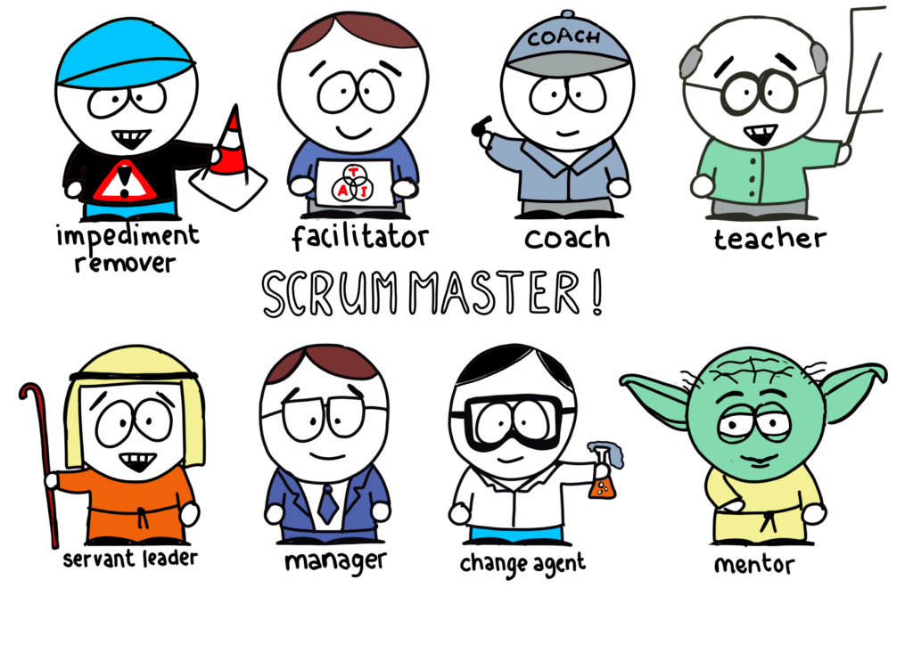

Scrummaster
Register date: 03/03/2018
Scrum master — це людина, яку можна назвати керівником проекту, хоча це не зовсім так, бо вона не є фактичним керівником.
Її завдання доносити філософію фреймворку Скраму та ідею самоврядування своїй команді, замовнику.Через важелі
мікроменджменту або інколи за безвихідної ситуації в жорсткий директивний спосіб управління.Відповідно Scrum-майстер
стежить за тим, аби усі принципи Scrum -у дотримувалися.